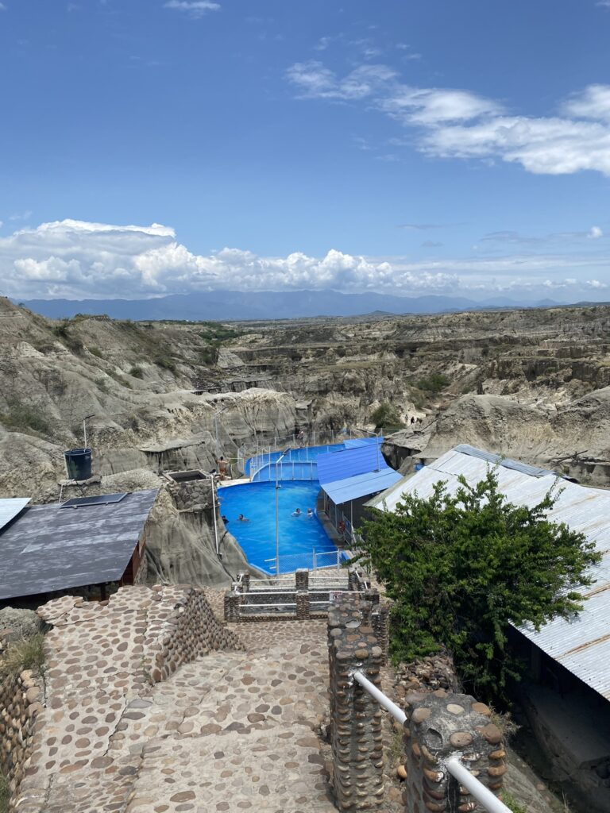

De roes van Cali is sterk genoeg om een week te blijven hangen, dansen en zweten. Als de verzengende hitte enigzins verzacht en de zwoele avondbries haar intrede doet, dendert het verslavende nachtleven door. In de schouwburg wordt het vertrouwen over mijn dansvaardigheden voorgoed de grond ingeboord, maar daar krijg ik een enorm spektakel voor terug. De beste salsadansers ter wereld manifesteren zich in ongelooflijke snelheden over het podium in korte jurken of kleurrijke pakken. Samendans wordt afgewisseld met onnavolgbare combinaties, salto’s en snel voetenwerk op hoge hakken. Daarna komen de artiesten het publiek in om de toeschouwers mee te nemen op de dansvloer, waardoor ik weer eens gruwelijk door de mand val. De lessen hebben geholpen, maar perfectie is nog ver weg.
Zand of modder
Het doet me beseffen dat ik nog maanden zal moeten blijven om een pro te worden (wat verleidelijk is en veel reizigers ook doen), maar het gebrek aan privacy en afwisseling duwt me steeds verder naar een ontsnapping buiten de stadsmuren. In het hostel waar de juice channels overuren zouden draaien, stapelt het gebrek aan slaap zich op. Na nog een paar lessen, groenteloze dagen en rondscharrelen op een paar vierkante kilometers midden in de hectiek, vertrek ik richting het oosten.
De nieuwe bestemming lijkt op de kaart dichtbij te liggen, maar in een land even groot als Spanje, Portugal en Frankrijk bij elkaar dat voornamelijk bestaat uit bergen, is alles verder dan je hoopte. 14 uur later (en vele taxi's en bussen) kom ik eindelijk aan, opgehouden door een omgevallen boom in de mistige bergen, waar de reizigers een feestje van maken met koffie en een kampvuur, tussen de kneuterige dorpjes met amper inwoners maar altijd een overdekt voetbalveld.
Van de hectiek beland ik in de serene rust van de Tatacoa woestijn. Het landschap bestaat uit een rood en een grijs deel en in veertig graden scharrel ik er de hele dag rond, genietend van eindelijk stilte, slangen op de kurkdrogen paden, rondtrekkende berggeiten en zelfs de torren in mijn veel te lange haar. In het hostel midden in de woestijn wacht het verlossende zwembad, bewaakt door een papegaai die een gesprek met me aanknoopt en zelfs de flirtende fluit beheerst. ‘s Avonds openbaart de indrukwekkende sterrenhemel zich en hoef ik alleen maar op mijn rugte liggen en te kijken, terwijl een expert in het Spaans doorratelt over de stand van mars en met zijn lightsaber zwaait. Uren later word ik ineens alleen wakker en verdwaasd zoek ik mijn matras op dat klaar ligt om volgezweet te worden in de verzengende nacht.

Dit is de stad
De volgende dag blijkt het ook hard te kunnen regenen in de woestijn. Zo hard zelfs dat de wegen niet meer van de rivier te onderscheiden zijn en ik vrees voor de beruchte aardverschuivingen die het continent teisteren, maar ik kom veilig in de grote stad Neiva aan. Daar stap ik over op een bus naar capital Bogotá, maar bij aankomst blijkt mijn tas verdwenen. Wel ligt er een identieke tas in het ruim en ik besef meteen dat een Deense reiziger waarmee ik eerder een paar woorden had gewisseld mijn tas heeft meegenomen. Ik bel verwoed alle hostels in de stad en krijg hem wonderbaarlijk genoeg te pakken, waarna de heilzame ruil kan worden ingezet tussen twee opgeluchte zielen. Een taxichauffeur die met een mengpaneel politiegeluiden produceert brengt me naar de binnenstad na een lange dag. De volgende ochtend ontmoet ik mijn favoriete reisgenoot; de Rode Beer is terug, en dat voelt altijd als thuiskomen.